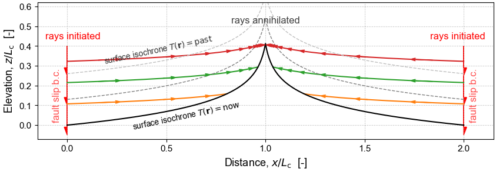

The Geometric Mechanics of Erosion (GME)¶
Exploring how landscapes evolve using the tools of classical mechanics and differential geometry

The goal of the GME project is to develop geometric mechanics software tailored to the study erosional processes, and to make this platform-independent software freely available.
These pages provide support for the GitHub repository of the GME project. The repository provides access to the gme Python package and related Jupyter notebooks. A companion repository provides access to the related geomorphysics Python library, called gmplib, which is required by gme.